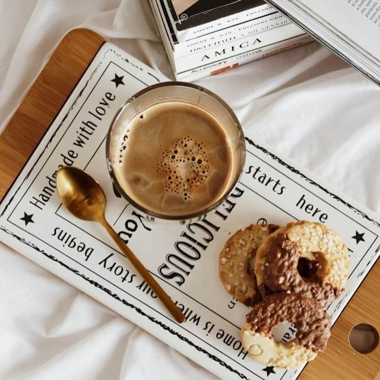
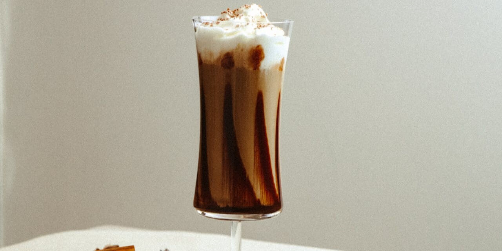
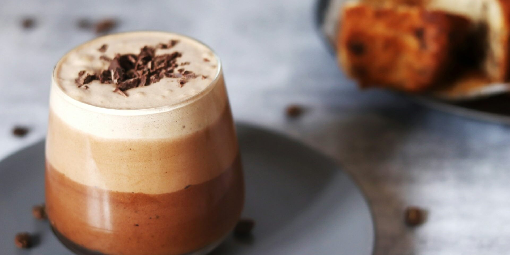

Blog
En nuestro blog compartimos contenido relacionado con el café, incluyendo recetas, consejos, historias y curiosidades. Un espacio pensado para aprender, disfrutar y conectar con la cultura cafetera.
Blogs
Café en compañía
Descubra las ventajas de tomar esos descansos de café en compañía, aquellos momentos no se viven todos los días.

La vida de un barista
Descubra nuestras historias de distintos baristas que nos enseñan que no es sólo un trabajo, sino una experiencia creativa y sensorial.

¿Un café americano?
A pesar que muchos lo ven como algo aburrido de tomar, descubra los beneficios de tomar un cafecito negro.

Productividad con cafeína
El café no solamente potencia el rendimiento y la resistencia, sino que el hacerlo durante otras actividades aumenta la dopamina y la motivación.

Nuestras recetas

Batido de chocolate con café
Disfrute esos días calurosos con un batido de chocolate con nuestro café Brumas del Valle.

Un antojito de la tarde
Prepara esta bebida de café con textura cremosa y un ligero sabor a chocolate. Su combinación de capas la hace tan atractiva como deliciosa, perfecta para acompañar cualquier momento del día.